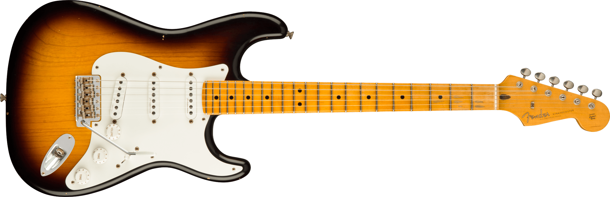
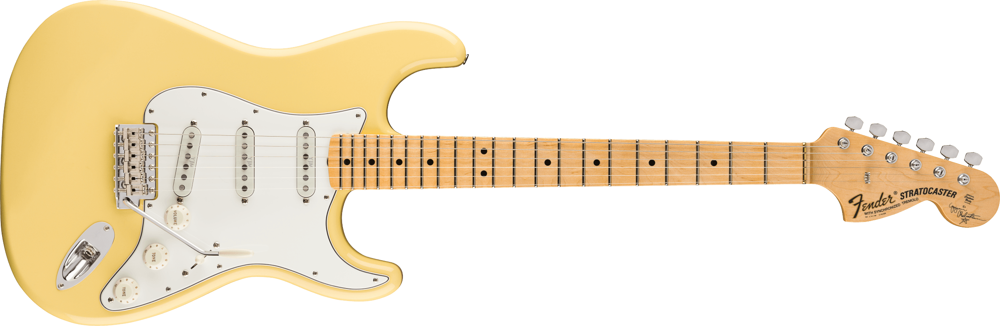
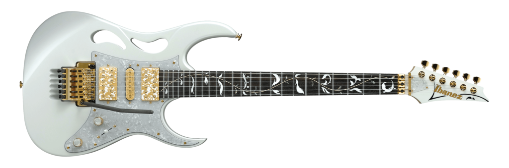

Eric Clapton
Eric Clapton, apelidado de "Slowhand", é um dos guitarristas mais influentes do blues e rock. Ao longo de sua carreira, Clapton tocou com diversas bandas, como Cream e Derek and the Dominos, e desenvolveu uma carreira solo prolífica. Sua guitarra mais famosa é a Fender Stratocaster "Blackie", uma combinação de peças de três Strats diferentes. Clapton também tem uma linha de modelos Signature da Fender, projetadas para capturar seu som suave e expressivo.

Yngwie Malmsteen
Yngwie Malmsteen é um guitarrista sueco conhecido por seu estilo "neoclássico" e técnica impressionante. Ele é frequentemente visto tocando uma Fender Stratocaster, geralmente modificada para se adaptar ao seu estilo veloz e altamente técnico. Sua guitarra mais famosa é uma Strat branca com escalas de alavanca "scalloped", que permite um controle preciso sobre as notas e facilita o uso de sua técnica de "shredding" extremamente rápida.

Steve Vai
Steve Vai é um virtuoso da guitarra, conhecido por seu trabalho solo e colaborações com artistas como Frank Zappa e David Lee Roth. Ele é associado principalmente às guitarras Ibanez JEM, que foram projetadas em conjunto com a Ibanez para atender ao seu estilo técnico e expressivo. A JEM se destaca pelos detalhes únicos, como o "Monkey Grip" (uma alça na lateral) e a captação evoluída que oferece versatilidade e tons precisos.
Eddie Van Halen
Eddie Van Halen foi um guitarrista inovador e cofundador da banda Van Halen. Conhecido por sua técnica revolucionária, especialmente o "tapping", ele popularizou a guitarra "Frankenstrat", uma mistura de peças de diferentes guitarras que ele modificou pessoalmente. A Frankenstrat tornou-se icônica devido à sua pintura listrada em vermelho, branco e preto. Eddie também usou a linha de guitarras EVH (Eddie Van Halen), desenvolvendo modelos como a EVH Wolfgang.